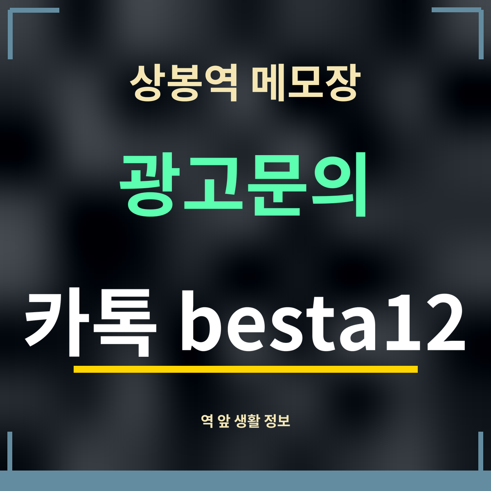

상봉역 메모장

상봉역은 7호선 · 경의중앙선 · 경춘선이 함께 서는 역입니다. 이 메모장은 역 앞에서 알아 두면 쓸모 있는 것들 — 첫차 시각, 현금 찾을 곳, 화장실, 쉬어 갈 카페, 끼니, 공원 — 을 공개 지도 정보로 확인해 적어 둔 곳입니다. 거리는 모두 지도 좌표로 잰 직선거리입니다.
정리해 둔 메모
| 상봉동한국관나이트 7호선 첫차 5시 37분 | 19세 미만 출입 금지 |
| 상봉동한국관나이트 초저녁 18~20시 요일별 | 19세 미만 출입 금지 |
| 상봉동한국관나이트 평일 새벽 흐름 | 19세 미만 출입 금지 |
| 상봉동한국관나이트 월~목 비교 | 19세 미만 출입 금지 |
| 상봉동한국관나이트 근처 ATM | 19세 미만 출입 금지 |
| 상봉동한국관나이트 근처 개방화장실 | 19세 미만 출입 금지 |
| 상봉동한국관나이트 근처 카페 | 19세 미만 출입 금지 |
| 상봉동한국관나이트 가기 전 식사할 곳 | 19세 미만 출입 금지 |
| 상봉동한국관나이트 근처 동네 공원 | 19세 미만 출입 금지 |
| 상봉동한국관나이트 입구와 주차장 위치 | 19세 미만 출입 금지 |
메모장을 쓰는 법
역에서 누군가를 만나기로 했다면 출구 번호와 가까운 카페를 먼저 정해 두세요. 현금이 필요한 약속이라면 저녁에 미리 ATM에 들르고, 늦게 돌아갈 날에는 첫차와 심야버스 시각을 함께 봐 두면 새벽에 역 앞에서 헤매지 않습니다.
모든 메모는 2026년 9월 27일에 확인한 공개 정보입니다. 가게나 시설 사정으로 바뀔 수 있으니, 출발 전에 지도 앱에서 한 번 더 확인하세요.
상봉역을 지나는 노선
한국철도공사 광역열차 운영노선(기준일 2025년 1월 1일)에 따르면 경춘선은 망우~춘천 80.7km 구간에 20개 역이 있고, 경의중앙선은 경의선과 중앙선을 합쳐 134.1km입니다. 7호선은 상봉역에서 석남 방면과 장암 방면 두 방향으로 다닙니다. 역에서 가까운 버스 정류장은 상봉역 2번 출구 정류장이고, 3·4번 출구 앞에도 정류장이 있습니다.
자주 묻는 것
상봉역에는 어떤 노선이 서나요?
7호선, 경의중앙선, 경춘선이 섭니다.
7호선, 경의중앙선, 경춘선이 섭니다.
거리는 어떻게 쟀나요?
지도 좌표로 잰 직선거리라 실제로 걷는 거리는 조금 더 깁니다.
지도 좌표로 잰 직선거리라 실제로 걷는 거리는 조금 더 깁니다.
언제 확인한 정보인가요?
2026년 9월 27일에 확인한 공개 지도 정보입니다.
2026년 9월 27일에 확인한 공개 지도 정보입니다.
한 줄 정리: 상봉역 앞에서 필요한 것들을 거리순으로 적어 둔 메모장입니다.